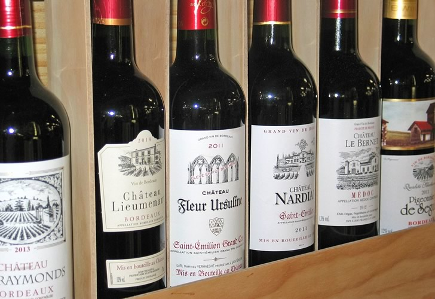

В данной главе речь пойдет о целительных свойствах красного вина, лечебный эффект которого известен многим. Достаточно вспомнить о том, что в состав большинства настоек из тех или иных лекарственных трав входит именно вино. Однако не стоит думать, будто о красном вине как целительном средстве узнали только теперь.
Вино всегда было и является неотъемлемой частью культуры и быта. Но далеко не все знают необыкновенные свойства вина, сортовые особенности и место каждого вида вина среди многообразия напитков и блюд. Противопоставление виноградного вина другим спиртным напиткам как напитка, вытесняющего из организма человека токсичные продукты, определенно указывает на его положительную роль.
Вино, в отличие от многих других спиртных напитков, не является продуктом перегонки. Истинные ценители вина считают, что настоящее вино живет, как реальный живой организм, своей жизнью. Рождению вина способствует брожение — процесс, вызываемый дрожжами, способными разлагать сахар на спирт и углекислый газ с выделением теплоты. Именно спиртовое брожение является основой изготовления вина, в частности красного, и содержит ряд биологически активных веществ, необходимых для организма человека. В этом смысле не имеет аналогов по своим свойствам красное виноградное вино.
Луи Пастер отметил однажды, что «вино может быть рассматриваемо с полным правом как самый здоровый гигиенический напиток».
Одним из важнейших свойств красного вина, о котором мало кто знает, является то, что оно является носителем потенциальной энергии, которая почти полностью используется организмом. Так, литр сухого красного вина содержит около 600–700 калорий, которые дают организму необходимый заряд энергии, благодаря чему сразу чувствуется прилив бодрости и подъем настроения.
Поэтому, если есть такая возможность, за завтраком каждый день выпивайте немного хорошего красного вина, употребление которого даст вам заряд бодрого настроения на целый день. Но помните, что более калорийными считаются десертные сладкие вина с большим содержанием сахара.
Вино обладает множеством ценных свойств благодаря своему составу. Так, компоненты вина, составленные из основных органогенов — водорода, кислорода, углерода, азота — являются питательными, так как принимают участие в пластических процессах и в обмене веществ. Хотя содержание азотистых веществ в вине невелико, очень ценными являются аминокислоты, которых в красном вине было найдено до 19.
Содержащиеся в этом удивительном продукте аминокислоты являются важными регуляторами и катализаторами обмена веществ, протекающего в организме. Несколько важнейших аминокислот, присутствующих в красном вине, служат многомерными звеньями, из которых построены все белки. Порядок включения аминокислот в них определяется генетическим кодом. Некоторые входят в состав ферментов и гормонов (йод в составе тироксина). Большинство микроорганизмов и растения синтезируют необходимые им для жизнедеятельности аминокислоты, организм животных и человека не способен образовывать так называемые незаменимые аминокислоты, получаемые с пищей. Поэтому употребление красного вина, в котором содержится 19 из 20 необходимых для нормального функционирования организма аминокислот, является крайне полезным.
Вместе с красным вином в организм попадают важнейшие для него элементы — калий и фосфор. Фосфор частично содержится в органической форме. Незначительное содержание хлора и хлоридов делает вино полезным при гипохлоридном режиме. В современных условиях большое значение имеет то, что при потреблении вина не накапливается свободный холестерин, накопление которого в организме ведет к развитию атеросклероза.
Атеросклероз — заболевание, которое возникает в основном у людей пожилого возраста. Это хроническое сердечно-сосудистое заболевание, которое характеризуется ухудшением кровоснабжения всех органов. Имеют некоторое значение наследственность, избыточное потребление животного жира, малая физическая активность, психоэмоциональное напряжение, курение. При атеросклерозе венозных артерий сердца возможны стенокардия, инфаркт миокарда, кардиосклероз; при атеросклерозе сосудов мозга возможны инсульт и даже психические нарушения. Для того, чтобы всего этого не случилось, нужно использовать проверенный и, что важно, приятный способ — употребление вместе с повседневной пищей небольшого количества красного вина.
Чрезмерно высокий уровень холестерина в крови приводит к увеличению ее вязкости, в связи с чем снижается скорость продвижения крови по мелким сосудам. Это в свою очередь вызывает недостаточное снабжение кровью внутреннего уха. Некоторые ученые придерживаются мнения, что данный факт может быть причиной понижения слуха у человека. Чтобы предупредить резкое снижение слуха, можно, и даже в некоторых случаях нужно, употреблять красное вино.
Как уже говорилось, помимо натурального фруктового сахара, который является оптимальным поставщиком энергии, красное вино содержит минеральные вещества и витамины, которые так необходимы организму. Для каждого человека необходимо знать краткие характеристики некоторых основных веществ, содержащихся в ягодах винограда, а значит, и в вине. Это нужно для того, чтобы оценить по достоинству полезные целебные свойства красного вина и употреблять его в тех или иных случаях.
Итак, кальций, содержащийся в красном вине, считается хорошим строительным материалом для костной ткани, его рекомендуется употреблять в достаточных количествах при мышечных спазмах и судорогах; цинк и витамин С повышают иммунитет; магний и витамин В успокаивают нервную систему, способствуют улучшению обмена веществ, рекомендуются при нарушениях сердечно-сосудистой системы, при отсутствии аппетита; витамин А необходим для здоровья кожи, глаз, слизистой оболочки.
Кроме того, высокое содержание калия улучшает деятельность почек. Одновременно с этим поваренная соль, мочевая кислота и другие остаточные продукты обмена вымываются из организма. Красное вино является прекрасным, в некоторых случаях незаменимым средством для выведения излишков жидкости и токсических веществ из организма, поэтому на многих известных курортах мира каждую осень — после сбора урожая — проводится лечение виноградом.
Красное вино можно отнести также к разряду продуктов, способствующих снижению веса. Наш вам добрый совет: поступайте, как французы, и позволяйте себе к обеду выпивать рюмку красного вина. Это задерживает поступление углеводов в кровь, переваривание белков в желудке замедляется, а аппетит снижается. К таким выводам пришли американские ученые. В результате своего исследования они стремились выяснить, почему французы, несмотря на любовь к вкусной, обильной пище, в большинстве своем стройнее, чем американцы. И причиной стройности, как оказалось, является бокал вина, выпиваемый чаще всего перед обедом.
Кроме вышеуказанных свойств, виноградное красное вино обладает бактерицидным действием и пагубно влияет на холерный вибрион, тифозные палочки, бациллы Эберта, родственные им.
В чистом столовом красном вине бактерии погибают за 20–30 минут. В вине, разбавленном водой, срок гибели вредных организмов несколько удлиняется.
Убивая или ослабляя кишечные бактерии, красное вино вместе с тем помогает скорейшему заживлению царапин на слизистых оболочках (благодаря наличию в нем дубильных веществ), тем самым являясь лучшим профилактическим средством против гнойных инфекций.
Естественно, вино само по себе обеззараживает не кишечник, имеющий щелочную среду, а лишь попадающие в организм продукты, в частности воду, которая часто не отвечает гигиеническим требованиям и нормам.
Поэтому употребление красного вина вместо питьевой воды, качество которой не совсем соответствуют санитарным нормам, будет весьма полезно. Советуем употреблять красное вино в любых условиях, где правила чистоты и гигиены вызывают некоторые сомнения.
Ученые-медики давно занимаются исследованием свойств вина в лабораторных условиях и научно обосновывают его действие на организм. В научной литературе описаны случаи и опыты, свидетельствующие об антитоксических свойствах красного вина. Так, по сообщению профессора Кроша, в 1861 году вином крепостью 14–16 % в количестве 3 бутылок был спасен индеец, укушенный одной из самых ядовитых змей.
Весьма показательны для демонстрации антитоксических свойств вина опыты с животными. Известно, что мышам впрыскивались смертельные дозы яда кобры и геморрагического яда гадюки, после чего давалось красное вино. Подопытные животные не только жили дольше контрольных, не получающих вина, но и спаслись таким образом.
Наиболее благоприятное воздействие оказывает красное вино на нервную систему. Свои исследования в этой области проводил профессор физиологии Ереванского зоотехнического ветеринарного института С. А. Щербаков. Результаты, полученные в процессе работы, оказались довольно интересными и превзошли даже самые смелые ожидания. Оказывается, вино стимулирует деятельность как слюнных, так и желудочных желез, способствует продуцированию соляной кислоты в желудке и амилолитической функции слюны.
На вегетативную нервную систему вино действует как симпатико-тоническое средство.
Проводя опыты с виноградным вином, профессор Щербаков заключил, что в процессе возбуждения коры головного мозга усиливается общее возбуждение, что сказывается на повышенной функции почек. Особенно в этом смысле свои положительные качества проявляет красное виноградное вино.
При умеренных дозах красное виноградное вино оказывает положительное воздействие на весь организм. Злоупотребление другими спиртными напитками и даже пивом имеет более тяжелые последствия по сравнению с действием красного вина, которое употребляется сверх меры.
При этом надо помнить, что плодово-ягодные вина, например смородиновое или шиповниковое, богаче виноградного вина витаминами. Особенно много содержится в них витамина С, который, как уже упоминалось выше, способствует повышению иммунитета и укрепляет организм. Витамин С особенно полезен тем людям, организм которых подвергается вредному воздействию окружающей среды. Данный витамин действует как антиокислитель, он способствует образованию новых коллагеновых волокон и предупреждает возникновение различных воспалений (образование новых коллагеновых волокон имеет большое значение, так как это волокна внеклеточного вещества соединительной ткани животных и человека; это прочные и малоэластичные волокна, выполняющие очень важную механическую функцию).
Использование и употребление красного вина, как хорошего целительного средства, известно очень давно. Зная и изучая лечебные свойства этого напитка, можно даже отказаться от применения некоторых химических препаратов. Но вино оказывает положительное действие и благоприятно влияет на весь организм, если учитывать правильные нормы его употребления (в основном красное вино употребляют в теплом или даже горячем виде). Для каждого человека необходимое количество этого напитка индивидуально, но в основном дневная норма не должна превышать 25–50 мл.
С точки зрения профилактики особенно важно предупреждение желудочно-кишечных инфекций при помощи красного вина. Благодаря его бактерицидным и антитоксическим свойствам, о которых говорилось выше, а также его воздействию на малярийных плазмодиев красное вино считается уникальным лечебным средством. По свидетельству 95-летнего ветерана — фельдшера Л. И. Крисцяка, жившего 15 лет в одной местности в Армении, где многие годы свирепствовала малярия, он ни разу не был подвержен этому тяжелому заболеванию благодаря тому, что заменил обычную питьевую воду для собственного употребления красным вином.
Даже такое распространенное заболевание, как обострение аппендицита, можно предупредить, если включить в свой повседневный рацион красное вино. Помимо всего прочего, в научной литературе имеются статистические данные о меньшей смертности от туберкулеза в винодельческих районах и о вспышках туберкулеза при сокращении производства вина.
Если у человека вдруг появляются признаки адинамического состояния, сопровождающегося нарушением координации и движения, онемением участков тела, улучшению его состояния будет способствовать красное вино.
Пользу красного вина при гриппозно-бронхиальных и легочных заболеваниях очень трудно переоценить. Если подышать над красным горячим вином в течение 5–7 минут, характерные неприятные признаки таких болезней (насморк, кашель) могут бесследно исчезнуть. Хорошим средством при лечении простудных заболеваний, особенно бронхита и гриппа, является своеобразный коктейль, приготовленный из красного вина и горчицы. А употребление плодово-ягодного или виноградного вина во время еды способствует гибели болезнетворных бактерий, после чего с любой болезнью под силу будет справиться обычным медицинским средствам.
Если вы добавите к красному вину черный перец, получите великолепный лечебный напиток, способный поставить на ноги простудившегося человека. Особенно эффективен такой напиток при лечении ангины. Чтобы это натуральное лекарство подействовало быстрее, необходимо сразу после его приема больного укутать (вместе с потом выйдет вся хворь). Не стоит пугаться тех неприятных ощущений, которые вы почувствуете в горле. Однако на следующее утро вы проснетесь здоровым и окрепшим, а о боли в горле и повышенной температуре будете вспоминать как о страшном сне.
Лечебный коктейль с использованием сухого красного вина очень благотворно влияет на сопротивляемость организма возбудителям различных заболеваний. Сухое красное вино, смешанное с соком алоэ и медом, предохраняет от простуды, повышает сопротивляемость организма инфекционным заболеваниям. Сок выжимают из нижних листьев растения, которые срезают, промывают холодной водой, режут на кусочки и отжимают через марлю. Затем добавляют мед и вино. Данную смесь нужно настаивать в течение 5–6 дней. Принимайте полученный продукт перед едой по 1 чайной ложке.
Употребление красного вина в небольших количествах также помогает при притуплении внимания или частичной потере памяти, успокаивает нервы.
Вино рекомендуется употреблять и больным туберкулезом. В этом случае вино более эффективно, чем спирт, благодаря содержанию многих полезных компонентов, таких, как таниды, минеральные соли, железо (которое полезно при малокровии, ослаблении организма, улучшает состав крови, обмен веществ), марганец, калий (улучшает состав костных тканей), кальций, фосфор и микроэлементы, глицерин и другие биологически активные вещества.
На родине многих элитных красных вин, в Бургундии, говорят, что «молоко стариков — вино». Такое выражение возникло не случайно. Красное вино является особенно эффективным средством для выздоравливающих, перенесших тяжелые операции, особенно для людей пожилого возраста. Вино рекомендуется в количестве не менее 30 мл в день при анемии, диабете, золотухе, малярии, переутомлении, диспепсии (нарушение пищеварения, проявляющееся изжогой, тяжестью под ложечкой, вздутием живота, схваткообразными болями; наблюдается при желудочно-кишечных и других заболеваниях, неправильном вскармливании ребенка и так далее), кахексии (общее истощение организма при опухолях, поражениях гипофиза (гипофизарная кахексия) и т. п.) и других болезнях.
В быту мы часто сталкиваемся с такими мелкими неприятностями, как порезы. При порезах тоже очень полезно использовать красное вино для обработки ран. Как известно, оно содержит в составе вещества, которые препятствуют проникновению инфекции в человеческий организм, а если такое все же случилось, помогают обезвреживать их. В качестве профилактической процедуры на место, где возникло раздражение или появился небольшой зуд, рекомендуется прикладывать ватную подушечку, смоченную в вине.
Особенно эффективно красное вино при операционном шоке, обмороках, асфиксии. Оно оказывает неоценимую помощь при анестезии, часто заменяя сильные медикаментозные препараты.
Всем известно, что вино согревает в прямом смысле слова. Рекомендуем самостоятельно приготовить напиток из красного вина — глинтвейн, один глоток которого великолепно согревает и является прекрасным средством против желудочно-кишечных заболеваний. Рецепт его приготовления, как известно, был открыт в Бургундии. «По-бургундски» готовить этот напиток несложно.
На две бутылки красного вина берется одна бутылка воды. Вода в любом случае должна быть профильтрованной. В теплой воде в течение короткого срока настаивают (чтобы избежать горечи) 30 г грубо измельченной корицы (в мешочке из редкой ткани). Если вино взято не сладкое, а сухое или полусухое, к нему добавляют около 40 кусочков сахара-рафинада. Смесь вина с водой доводится до кипения, затем добавляется немного гвоздики, корицы, кардамона и ломтики лимона без кожицы. Можно добавить столовую ложку коньяку.
Кипятить глинтвейн продолжительное время не следует, необходимо лишь поддерживать его горячим. Данный напиток, приготовленный в домашних условиях, вообще лучше употреблять сразу после того, как вы его приготовили, так как в этом случае лучше сохраняются его вкусовые качества и, что самое главное, полезные свойства.
Естественно, что вино употреблять всем без исключения не рекомендуется: при некоторых заболеваниях оно противопоказано. Нередко для того, чтобы использовать красное вино в медицинских целях, необходимо назначение врача (но это только в том случае, если вы решили организовать серьезный курс лечения, основой которого будет красное вино).
Если же употреблять красное вино в небольших количествах, это принесет только пользу. Причем, сами того не ожидая, вы можете почувствовать прилив бодрости и улучшение физического состояния в целом.
Как ни невероятно это прозвучит, но красное вино много раз спасало человеческие жизни, а не просто улучшало здоровье. Таких фактов в истории немало.
Наверное, самым ярким подтверждением наших слов будет история физиков Марии и Пьера Кюри, которые сделали потрясающее открытие радиоактивного элемента полония и радия в 1898 году, исследовали пьезоэлектричество и очень опасное для здоровья радиоактивное излучение. Понятно, что при других обстоятельствах порция излучения, которое стало неотъемлемой частью их научной работы, могла оказаться роковой для их жизни. А обстоятельства заключались в том, что эти ученые были французами и их повседневные привычки спасли им жизнь.
Французы неравнодушны к красному вину, и супруги Кюри на протяжении многих лет на завтрак выпивали по рюмочке вина. Оказывается, красное вино, кроме всех присущих ему полезных свойств, многие из которых были известны уже в то время, обладает уникальной способностью предотвращать накопление радиоактивности в организме.
Данный исторический факт еще раз оказывается подтверждением того, что красное вино является уникальным средством борьбы с внешними неблагоприятными условиями среды, позволяет организму мобилизовать все защитные свойства и в какой-то степени предупреждает возникновение различных заболеваний.
Но не всякое вино может принести пользу. Полезные свойства красного вина обуславливаются его же составом. Особенности этого удивительного напитка заключаются в том, что он требует исключительного бережного отношения и в хранении, и в том, как его использовать, и, главное, в создании. Все это требует особого настроения, ведь процесс приготовления хорошего вина — настоящее творчество, в которое необходимо вкладывать частичку души. И только по-настоящему качественное вино может принести пользу вашему здоровью.
На протяжении всей жизни вино требует бережного ухода. Для того, чтобы оно сохранило целебные свойства, хранить его рекомендуется в соответствии со специальными правилами. Так, угол наклона бутылки красного вина от горизонтальной поверхности не должен превышать 13 5о 0. А на Кавказе говорят, что при подаче на стол красного вина нельзя стирать даже пыль с той посуды, в которой хранился этот удивительный напиток.
Правильное хранение красного вина позволяет людям на протяжении многих веков не только наслаждаться его вкусом и ароматом, но и извлекать из его употребления несомненную пользу. В последние несколько десятилетий ученые занялись этим вопросом отдельно. Исследование влияния вина на отдельные системы человеческого организма привело к следующим выводам.
Вино активизирует вагосимпатическую систему и усиливает секрецию эндокринных желез; усиливает слюноотделение и секрецию птиалина (амилазы слюны); способствует лучшему отделению желудочного сока и перевариванию протеинов; благоприятствует выделению желчи в печени; оказывает диуретическое действие на почки (то есть употребление красного вина способствует усиленной работе почек и выведению избытка воды и хлорида натрия из организма); способствует вентилированию легких, воздействуя на сердечно-сосудистую систему, расширяет сосуды; выявляет в крови алкализирующие свойства, действуя против ацидоза (ацидоз — сдвиг кислотно-щелочного равновесия в организме в сторону относительного увеличения количества анионов).
Таким образом, умеренность и своевременность употребления красного вина не только позволит вам насладиться его непревзойденным вкусом, но и помочь в лечении многих недугов. Тем более, что напиток этот сильно отличается от обычных антибиотиков, которые отравляют организм человека. В отличие от их не всегда положительного действия красное вино способно принести настоящую пользу вашему организму.